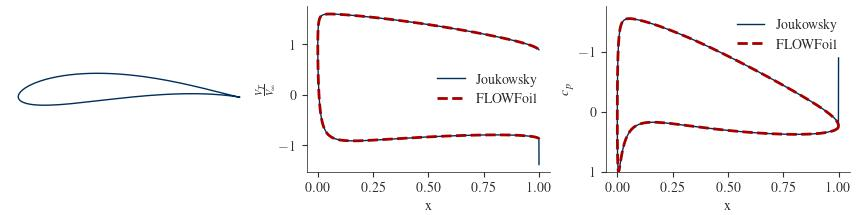
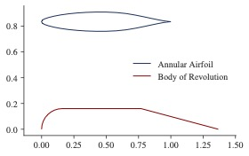
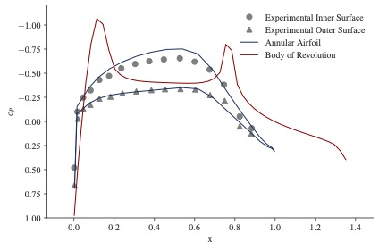

Quick Start
FLOWFoil is structured as follows:
- PROBLEM: The user generates a
Problem. - SOLUTION: The
Problemis solved, generating aSolution. - POLAR: The
Solutionis post-processed, generating aPolar.
There are also some included convenience functions for geometry generation and manipulation.
Single Airfoil Inviscid Solution
Let's first look at the simplest case: a single inviscid airfoil. We'll first set up the geometry, then define the problem, then solve the problem, then post process it, and finally plot some of the outputs.
Setup:
Define Geometry
For this example, we'll use one of the airfoil parameterization convenience functions to generate the x,z coordinates of an arbitrary Joukowsky airfoil. FLOWFoil includes several such convenience functions, which you can find more information on the API Reference page.
## -- SET UP GEOMETRY
# arbitrarily pick some joukowsky airfoil parameters
center = [-0.1; 0.1]
radius = 1.0
num_nodes = 160
# get airfoil coordinates for joukowsky airfoil
x, z = FLOWFoil.joukowsky(center, radius; N=num_nodes)
# get analytic joukowsky solution for later, using alpha=4 and vinf = 1.0
vj, cpj, clj = FLOWFoil.joukowskyflow(center, radius, 4.0, 1.0; N=num_nodes)For any airfoil coordinate generation method (from FLOWFoil or otherwise), the coordinates must start at the trailing edge, and proceed clockwise around the airfoil.
Generate Mesh
We'll next take the airfoil geometry and create a mesh object that holds the coordinates as well as pertinent information regarding the trailing edge. (The trailing edge information is calculated automatically as part of the generate_mesh constructor.)
FLOWFoil.generate_mesh — Functiongenerate_mesh(x, y; chordlength, wakelength)Create panels from input geometry coordinates.
Arguments:
x::Vector{Float}: x coordinates defining airfoil geometry.y::Vector{Float}: y coordinates defining airfoil geometry.
Keyword Arguments:
gaptolerance::Float: Tolerance for how close, relative to the chord, the trailing edge nodes can be before being considered a sharp trailing edge. (default = 1e-10)
Returns
mesh::PlanarMesh: Geometry mesh, including panel nodes and trailing edge condition.
generate_mesh(coordinates; kwargs)Identical to implementation with x and y separate, but here with x,y coordinates together in a single array [X Y].
Arguments:
coordinates::Array{Float,2}: array of both x and y coordinates (x first column, y second column).
# generate mesh object
mesh = FLOWFoil.generate_mesh([x z])Define Problem
We'll define a Problem object using the mesh we just created, and indicate that we want to solve the inviscid problem by setting the viscous keyword argument to false. The problem object is very simple in the inviscid case, but carries more information about the freestream for the viscous problem (not yet implemented)
FLOWFoil.Problem — TypeProblem{TM,TF,TB}Problem definition (geometry, operating point(s), and method selection) and output behavior.
Fields:
meshes::Array{PlanarMesh}: Array of mesh objectsangleofattack::Float: angle of attack to analyze.reynolds::Float: Reynolds number to analyze.mach::Float: Mach number to analyze.viscous::Bool: Flag to solve viscous or inviscid onlyverbose::Bool: Flag to print out verbose statements
## -- DEFINE PROBLEM
problem = FLOWFoil.Problem([mesh]; viscous=false)Even for single mesh objects, the mesh argument provided to the Problem constructor needs to be in an array.
Solve Problem
To solve the Problem, we simply call the solve function, which will select the appropriate solver based on the viscous field in the problem. The solver returns a solution, in this case an InviscidSolution, object, which nominally contains the vortex strengths on each node, as well as the mesh objects used in the solution, and some book keeping items from multi-element analyses.
FLOWFoil.solve — Functionsolve(problem)Solve problem defined by the input Problem object and return the solution in a Solution object.
Arguments:
problem::Problem: Problem to solve
Returns:
solution::{InviscidSolution or ViscousSolution}: returns solution of type matching viscous flag in problem.
FLOWFoil.InviscidSolution — TypeInviscidSolution{TM,TF,TD}Fields:
mesh::PlanarMesh: PlanarMesh object describing airfoil nodes etc.panelgammas::Array{Float,2}: $\gamma_0$ and $\gamma_{90}$ values at each airfoil node.bodystrength::Array{Float}: if 2D system, bodystrength = $\Psi_0$ (constant stream function) 0 and 90 values. If axisymmetric system, bodystrength = bound vortex strength of body.Ns::Array{Float}: Array of numbers of nodes for each airfoil in the system.system::InviscidSystem: system object.
## -- SOLVE PROBLEM
inviscid_solution = FLOWFoil.solve(problem)Post Process Solution
With the solution calculated, we can post process by providing the angle of attack at which we want to know the various airfoil coefficients including lift and moment, as well as surface velocity and pressure distributions, all of which are returned as part of a polar object, in our case for this example: a PlanarPolar.
FLOWFoil.get_planar_polar — Functionget_planar_polar(inviscid_solution, angleofattack; cascade=false)Generate PlanarPolar object for inviscid system at given angle of attack.
Arguements:
inviscid_solution::InviscidSolution: Inviscid Solution objectangleofattack::Float: Angle of attack, in degrees
FLOWFoil.PlanarPolar — TypePlanarPolar{TF}Fields:
lift::Float: Lift Coefficient.drag::Float: Total Drag Coefficient.pdrag::Float: Pressure Drag Coefficient.idrag::Float: Induced Drag Coefficient.moment::Float: Moment Coefficient.surfacevelocity::Vector{Float}: surface velocity distributionsurfacepressure::Vector{Float}: surface pressure distribution
## -- POST PROCESS SOLUTION
# arbitrarily pick an angle of attack
alpha = 4.0
polar = FLOWFoil.get_planar_polar(inviscid_solution, alpha)Comparing our solution to the analytic solution we saved earlier, we see excellent agreement.

Multiple Airfoil Inviscid Solution
For a multi-element airfoil system, the procedure is identical, except the array of meshes contains more than one element. For this case, we'll use data that comes from "An Exact Test Case for the Plane Potential Flow About Two Adjacent Lifting Aerofoils" by B. R. Williams.
using FLOWFoil
## -- SET UP GEOMETRY
include("two_inviscid_airfoils.jl")
# set freestream to unity
vinf = 1.0
re = 1.0
# arbitrarily pick an angle of attack
alpha = 0.0
# generate mesh object
meshes = [FLOWFoil.generate_mesh([ximain etamain]); FLOWFoil.generate_mesh([xiflap etaflap])]
## -- DEFINE PROBLEM
problem = FLOWFoil.Problem(meshes; viscous=false)
## -- SOLVE PROBLEM
inviscid_solution = FLOWFoil.solve(problem)
## -- POST PROCESS SOLUTION
polar = FLOWFoil.get_planar_polar(inviscid_solution, alpha)Again, we see excellent agreement with the analytical solution.

Axisymmetric Body of Revolution
FLOWFoil can also handle axisymmetric cases, including bodies of revolution which we domonstrate here. For this example, we use data from chapter 4 of "Vortex Element Methods for fluid Dynamic Analysis of Engineering Systems" by R. I. Lewis
using FLOWFoil
using PyPlot
include("../../test/data/bodyofrevolutioncoords.jl")
nothing #hideIn order to have the correct flags associated with the axisymmetric solver, we generate the mehs using the generate_axisym_mesh function. In addition, since we are modeling a body of revolution, that is, we have an open geometry at the axis of rotation, we need to include the bodyofrevolution keyword argument.
FLOWFoil.generate_axisym_mesh — Functiongenerate_axisym_mesh(x, r; bodyofrevolution)Generate mesh for axisymmetric body.
Arguments:
x::Array{Float}: x-coordinates of geometryr::Array{Float}: r-coordinates of geometry
Keyword Arguments:
bodyofrevolution::Bool: flag whether body is a body of revolution (default=true)
Returns:
mesh::FLOWFoil.AxiSymMesh: axisymmetric mesh object
FLOWFoil.AxiSymMesh — TypeAxiSymMesh{TP,TB}Axisymmetric Mesh Object
Fields:
panels::FLOWFoil.AxiSymPanel: panel objects describing surface geometry.bodyofrevolution::Bool: Flag as to whether or not the mesh represents a body of revolution.
mesh = [FLOWFoil.generate_axisym_mesh(x, r; bodyofrevolution=true)]
nothing #hideWe will also need to set the axisymmetric keyword argument to true in our problem definition.
problem = FLOWFoil.Problem(mesh; axisymmetric=true, viscous=false)
nothing #hideThe solver function will know from the problem object which solver to use, and since we have again selected viscous=false (noting that no viscous solver is yet implemented) we will again have an output of type InviscidSolution.
solution = FLOWFoil.solve(problem)
nothing #hideWith the solution, we can call the get_axisymmetric_polar function to generate an AxiSymPolar object containing the post-processed data. Note that for the axisymmetric case, we have no angle of attack, so the inviscid solution itself is sufficient for the body of revolution case.
FLOWFoil.get_axisymmetric_polar — Functionget_axisymmetric_polar(inviscid_solution, Vinf; rho=1.225)Assemble post processing values for axisymmetric case.
Arguments:
inviscid_solution::FLOWFoil.InviscidSolution: Inviscid solution object from FLOWFoil.Vinf::Float: freestream velocity
Keyword Arguments:
rho::Float: air density
Returns:
axisym_post::AxiSymPost: Post processed object for Axisymmetric cases.
FLOWFoil.AxiSymPolar — TypeAxiSymPolar{TF,TA}Fields:
thrust::Float: Thrust (or drag) of bodysurface_velocity::Array{Float}: surface velocity on each panelsurface_pressure::Array{Float}: surface pressure coefficient on each panel
polar = FLOWFoil.get_axisymmetric_polar(solution)
# get surface velocity at control points
cpx = [mesh[1].panels[i].controlpoint[1] for i in 1:length(solution.panelgammas)]
#get velocity from polar object
surface_velocity = polar.surface_velocity
nothing #hide
Axisymmetric Annular Airfoil (Duct)
If we define an airfoil shape in an axisymmetric scheme, we model an annular airfoil, or in other words, a duct. To do so, we follow a similar procedure to bodies of revolution with the exception that we set bodyofrevolution=false.
No part of the geometry for a non-body of revolution can reside below z=0, otherwise an error will be thrown.
using FLOWFoil
include("../../test/data/naca_662-015.jl")
#Set bodyofrevolution to false
mesh = [FLOWFoil.generate_axisym_mesh(x, r, bodyofrevolution=false)]
problem = FLOWFoil.Problem(mesh; axisymmetric=true, viscous=false)
solution = FLOWFoil.solve(problem)
polar = FLOWFoil.get_axisymmetric_polar(solution)
# get control point x-locations
cpx = [mesh[1].panels[i].controlpoint[1] for i in 1:length(solution.panelgammas)]
cp = polar.surface_pressureAs above, we plot experimental results along with our calculated values.

Axisymmetric Mutli-element Systems
As an example of an multi-element axisymmetric system (such as that used for a ducted rotor), we will simply combine the two previous cases. We proceed in the same manner for 2D (planar) multi-element systems in that we simply put the various mesh objects in an array together when defining the problem object.
using FLOWFoil
# create annular airfoil mesh object
include("../../test/data/naca_662-015.jl")
duct = FLOWFoil.generate_axisym_mesh(x, r; bodyofrevolution=false)
# create body of revolution mesh object
include("../../test/data/bodyofrevolutioncoords.jl")
hub = FLOWFoil.generate_axisym_mesh(x, r; bodyofrevolution=true)
# define problem with both mesh objects
problem = FLOWFoil.Problem([duct; hub]; axisymmetric=true, viscous=false)
solution = FLOWFoil.solve(problem)
# Post Processing
polar = FLOWFoil.get_axisymmetric_polar(solution)
# get surface velocity at control points
cpx = [(p -> p.controlpoint[1]).(duct.panels); (p -> p.controlpoint[1]).(hub.panels)]
#surface velocities
surface_velocity = polar.surface_velocity
#surface pressure coefficients
surface_pressure = polar.surface_pressurePlotting the geometry and the output velocities and pressures show expected behavior when combining these two cases.


